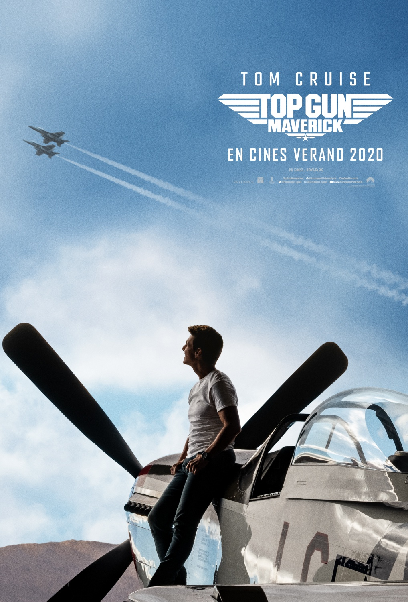

Top Gun: Maverick
Top Gun: Maverick
¿Qué dice la crítica sobre “Top Gun: Maverick”, la secuela del filme ochentero?
Tom Cruise vuelve como el piloto Maverick tres décadas después de la cinta original, y bajo la dirección de Joseph Kosinski en reemplazo del fallecido Tony Scott
Esta semana, Top Gun: Maverick finalmente llegó a los cines tras experimentar múltiples retrasos durante su producción por la crisis de la pandemia. Se trata de la secuela del clásico Top Gun (1986), una historia taquillera que llevó a Tom Cruise al punto más alto de reconocimiento en una etapa temprana de su carrera artística. Tres décadas más tarde, el actor vuelve en el rol de Pete Maverick Mitchell, el habilidoso piloto de la fuerza militar de los Estados Unidos, en una película dirigida por Joseph Kosinski (Tron: Legacy y Oblivion)
Continuacion
En esta continuación, el protagonista se ha convertido en un piloto de pruebas de la marina, un trabajo que siempre consideró ideal para él después de los eventos que experimentó en la primera entrega. Todo ha cambiado en este largo tiempo, no ha habido una guerra grande en años y el rol de los aviadores puede ser ahora realizado por un dron inteligente y sumamente moderno. Sin embargo, el gran Maverick demostrará que su talento e intrepidez no pueden ser reemplazados de ninguna manera. Además de Cruise, el reparto principal está integrado por Val Kilmer, Miles Teller, Jennifer Connelly, Glen Powell, Jon Hamm y Ed Harris.
Esto dicen las críticas sobre Top Gun: Maverick
David Ehrlich, de IndieWire: “Si Top Gun fue una película divertida porque inventó a Tom Cruise, Maverick es una gran película porque lo inmortaliza”.
David Rooney, de The Hollywood Reporter: “Una secuela superior. […] Sigue la original latido por latido, hasta un punto que es casi cómico. Y, sin embargo,
a pesar de lo formulado que es, no se puede negar que ofrece tanto nostalgia como reinvención”.
Peter Debruge, de Variety: “El compromiso de filmar prácticamente todo se siente como el equivalente de vanguardia de Hell’s Angels, de Howard Hughes,
una película que hizo historia”.